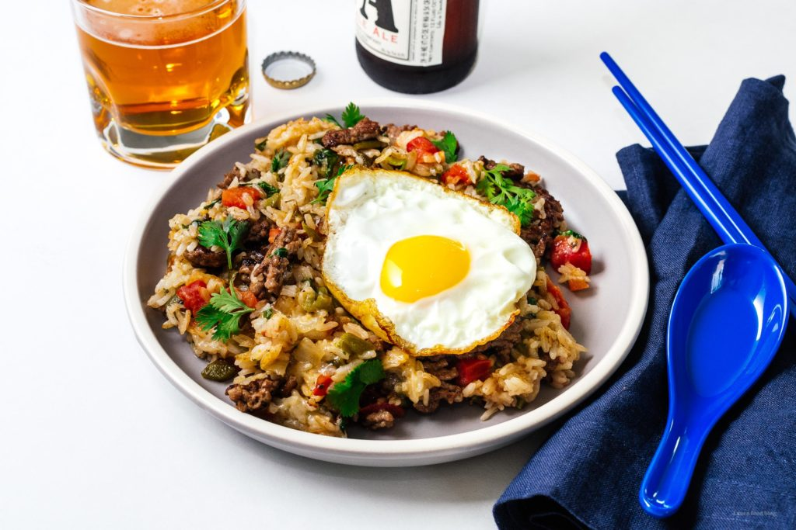

Hatch Green Chile Cheeseburger Fried Rice

INGREDIENTS
- 1/2 lb ground beef
- oil for the pan
- 1/2 onion diced
- 2 cups cooked rice cold, preferably day old
- 1/2 cup chopped roasted Hatch green chile
- 1 cup lettuce shredded/chopped
- 1/2 tomato diced
- salt and freshly ground pepper to taste
- 1/2 cup shredded mozzarella cheese or cheese of choice
- 2 eggs
- cilantro to finish, if desired
INSTRUCTION
- Heat a large skillet or wok over medium high heat. Add the ground beef, pressing down and searing crispy and deeply browned. Flip and cook the other side and when brown, break up into small bits.
- Turn the heat down to medium and add the onions and cook slightly, 1–2 minutes.
- If the skillet is dry, add a bit of oil and then add the rice. Turn the heat up to high and fry, stirring occasionally until the rice is crispy and heated through. If you’re using rice from the fridge, it’s best to break it up with slightly wet hands before putting in the pan.
- Mix in the green chiles, chopped lettuce, and tomato. Stir in the cheese and toss everything together so that everything is evenly distributed. Season with salt and pepper to taste.
- In another non stick pan, heat up a bit of oil and fry a sunny side up egg per person.
- Plate the rice and top each plate with an egg. Finish with cilantro and enjoy immediately
GO TO RECIPEES